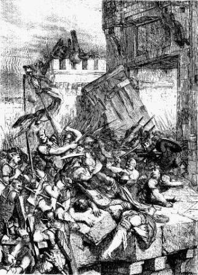

No Principio...

Adão e Eva
O nome do primeiro livro da Bíblia, Gênesis, significa começo. Os dois primeiros capítulos do Gênesis nos diz que Deus criou o universo: as estrelas, a terra, e cada coisa viva que é ou ja foi. A criação mais especial de Deus foi o ser humano: as pessoas. As pessoas são especiais porque elas são criadas na imagem de Deus. (Se referem a Gênesis 1:26-27)

O terceiro capítulo do Gênesis narra a história de como o pecado entrou no mundo. Adão e Eva, o primeiro homem e a primeira mulher, foram tentados a acreditar que Deus mentiu para eles. Porque eles acreditavam a mentira, eles estavam convencidos que poderia ser como Deus. Quando Deus viu que tinha sido desobediente, Adão e Eva não gostavam mais de relação aberta com Deus que eles tinham desfrutado antes; o pecado separou eles de Deus. E assim tem sido, para todos, exceto Um, que tem vivido desde o: todos nós estamos separados de Deus pelo pecado.
Os capítulos quatro e cinco de Gênesis contam a história triste do mal crescente da humanidade. Deus ainda não tinha dado os seus mandamentos e a maneira correta de viver dos homens, e as pessoas só fizeram o que queriam, não importa o quão ruim era. Toda a civilização estava envolvido em violência e imoralidade de todo tipo. Quando Deus viu a triste condição de Sua maior criação, Ele lamentou que Ele havia criado seres capazes de tal comportamento.

Noé
Como Deus olhou para Sua criação pecador, encontrou um homem andando com o Senhor: Noé. Deus decidiu destruir a humanidade e começar de novo com Noé e sua família. O sexto de capítulo de Gênesis a té capítula oito dizer como Deus destruiu toda a humanidade com uma inundação, salvo apenas Noé e sua esposa e três filhos e suas esposas.
Capítulos nove a onze do Gênesis dá-nos a história de como a terra foi repovoada após a inundação dos filhos de Noé, Sem, Cam e Jafet. No final do capítulo onze, somos apresentados a um homem muito especial, um homem de Deus chamado para ser o pai de um povo que Ele pudesse chamar de seu.

Abraão
No Gênesis, a Bíblia nos fala de um certo número de pessoas que "andou com Deus," como Noé. Andando com Deus exige fé, um acredimento total que Deus vai fazer o que promete. Noé tinha muita fé em acreditar que Deus iria destruir toda a população da terra com um dilúvio e paraseguir as instruções de Deus para construir a arca (um barco grande), quando as pessoas ridicularizavam enquanto ele trabalhava. No capítulo doze de Gênesis, aprendemos de outro homem que Deus exigiu muita fé: Abraão.
Deus perguntou um monte de Abrão (mais tarde, Deus mudou seu nome para Abraão): Ele pediu a Abraão para deixar sua terra natal e ir para um lugar que nunca tinha visto, onde ele não conhecia ninguém. Por sua obediência, Deus fez duas promessas a Abraão:
- disse que daria a terra de Canaã (que agora é chamado de Israel) a Abraão e a seus descendentes
- disse que uma grande nação viria da descendência de Abraão
Na mente de Abraão, ambas as promessas devem ter parecido impossíveis. A terra de Canaã, pertencia a outro grupo de pessoas, e Abraão e sua esposa não tiveram filhos. E a esposa de Abraão, Sarah, era velho demais para ter filhos. No entanto, Abraão tinha fé, e é assim que toda a sua família se estabeleceu em Canaã.
Se você ler a história de Abraão, em capítulos 12-23 de Gênesis, você vai ver que a fé de Abraão não era perfeito: às vezes ele "tomou as coisas em sua próprias mãos", ao invés de esperar em Deus e Seu tempo. Embora às vezes Abraão duvidou de Deus, lemos em Gênesis 15:6: "E ele acreditava no Senhor, e foi contado como justiça."
Embora não seja fácil, mesmo quando não podemos entender o Seu plano, Deus nos convida a ter fé nEle.

Assim como Deus prometeu, Sarah teve um filho; chamado Isaac. Sarah estava feliz que Deus lhe deu um filho, mesmo em idade avançada.
Quando Isaac cresceu e se casou, ele se tornou pai de dois filhos, Jacó e Esaú (Gênesis 25:19-Gênesis 30).
Jacó foi o pai de doze filhos (você pode ver uma lista de seus nomes em Gênesis 35:23-26). Os nomes dos filhos se tornariam os nomes das doze tribos de Israel. (Mais tarde, Deus mudou o nome de Jacó para Israel—Gênesis 35:10.) Através desses doze filhos, Deus cumpriu Sua promessa de fazer de Abraão uma grande nação de muitas pessoas por isso.

José e do Faraó do Egito
Moisés
Um dos filhos de Jacó, José, foi para o Egito e tornou-se um alto funcionário na corte do Faraó (Você pode ler sobre ele em Gênesis 37-50; é uma longa história, mas é uma aventura). Eventualmente, todos os onze irmãos de José foi para o Egito, também. Enquanto José estava vivo, sua família viveu bem por causa da sua ligação com o Faraó.
Após a morte de José, as novas gerações de judeus eram nascidos, e um novo Faraó chegou ao poder. Ele não sabia que José tinha sido favorecido pela família real. Este novo Faraó viu que os judeus (os Israelitas eram também conhecidos como os judeus ou o povo judeu) tinham aumentado consideravelmente em número. Ele estava com medo que eles poderiam derrubar seu governo. Portanto, todos os Israelitas (judeus) foram feitos para serem escravos no Egito.

Em Êxodo 2:23, a Bíblia nos diz que os Israelitas sofreram muito como escravos no Egito. Eles clamaram a Deus para resgatá-los, e Deus ouviu. Ele escolheu um homem entre os judeus para ajudar a livrar o Israel da escravidão. O nome do homem era Moisés.
Ao contrário de Abraão, que obedeceu ao chamado de Deus, Moisés a primeiramente tentou convencer o Senhor usar outra pessoa (Êxodo 4:1-14). Deus mostrou a Moisés que seria Deus, e não Moisés, quem realmente iria forçar a mão de Faraó a libertar os escravos judeus. Moisés seria apenas o mensageiro de Deus.
No Egito, eles adoravam muitos deuses—ídolos—não o Deus de Abraão, Isaac e Jacó. Quando Moisés aproximou primeiramente Faraó (Êxodo 5), Faraó zombou: “Quem é o Senhor, que eu deveria obedecer a Sua voz e deixar Israel ir?”
Moisés voltou a Faraó com um segundo pedido que o Faraó libertar os escravos judeus.
Desta vez, porém, Moisés levou consigo um aviso de Deus: Se Faraó não concordaria em libertar os israelitas, : Deus enviaria uma série de nove pragas no Egito: a destruição de pragas, doenças e escuridão. Surpreendentemente, mesmo após os horríficos efeitos de todas estas pragas, Faraó ainda se recusava a acreditar no poder de Deus e ele não iria liberaria os judeus. (Êxodo 7:15-Êxodo 11)
Foi somente após a décima praga (Êxodo 12) que Faraó finalmente concordou em dar liberdade aos escravos no Egito: o filho mais velho de cada família egípcia seria morto. No entanto, Deus pouparia os filhos primogênitos dos judeus. Ele ordenou que cada família judea abate um cordeiro e pinte o seu sangue nas portas de suas casas. Quando o anjo de Deus veio para matar os primogênitos, Ele passou por cima as casas de todos os que seguiram as instruções de Deus para pintar o sangue do cordeiro em suas portas. Para este dia, os judeus celebram a festa da Páscoa de cada ano para comemorar o milagre que libertou-os da escravidão.
Sob a liderança de Moisés, os judeus começaram a suas viagem do Egito. Mesmo depois de tudo o que tinha acontecido para o Egito nas mãos de Deus, Faraó tentou uma última vez para manter os israelitas escravizados.
O exército egípcio perseguiu os israelitas do Mar Vermelho, pensando que eles tinham ficado presos na água (Êxodo 14). Deus ordenou a Moisés levantar sua bengala acima da água. Milagrosamente, as águas do mar se divididieram em dois. Isso deixou os judeus atravessar o mar, caminhando por uma estrada seca. Quando o exército de Faraó tentou cruzar a mesma estrada, o mar caiu em ambos os lados, afogando-os todos. Finalmente, o povo de Israel estavam livres da escravidão.
E, como Deus disse a Moisés quando o chamou, era a mão poderosa de Deus, que fez tudo!
Os Dez Mandamentos
Como se viu na história do Grande Dilúvio, Deus ainda não tinha dado as Sua leis para o povo. Quando os judeus começaram a fazer o seu caminho para a terra que Deus havia prometido a Abraão e seus descendentes, Deus instruiu Moisés para subir ao topo do Monte Sinai. Lá, com o monte coberto de fumaça para proteger as pessoas da maior glória de Deus, Moisés recebeu os mandamentos de Deus para o Seu povo. (Êxodo 20:1-17)

Só porque os judeus não estavam mais em cativeiro no Egito, não significa que todos os seus problemas acabaram. A história de suas viagem à terra que Deus lhes havia prometido abrangeu um período de quarenta anos!
A fé dos israelitas era fraco; muitas vezes duvidaram que Deus iria prover para eles. Eles estavam tão desanimados, às vezes, eles realmente discutiram para retornar ao Egito! E, talvez o pior de tudo, eles até criaram ídolos para adorar porque eles duvidaram tanto a Deus.
A história da morte de Moisés é registrado no capítulo 34 de Deuteronômio. E no livro de Deuteronômio Deus se expande nos leis que tinha dado ao Seu povo no Monte Sinai. Ele descreve como as pessoas deviam comportar-se com seus companheiros judeus.